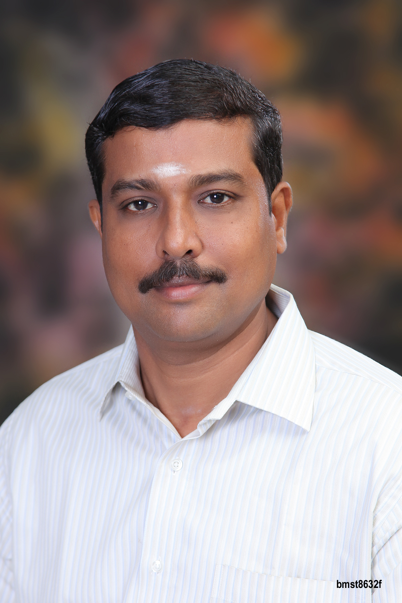

Whom we are :

Our Proprietor
A proprietor concern which was established during 1997 by Mr.K.Mohan.
Basically being an hoticultural degree holder, has well versed knowledge in varieties of cotton which is the basic raw material for the hosiery garments. With his wide knowledge all the garments are made out of 100% combed premium cotton which is the hilight for our continuous success in this field for more than two decades. Started up with domestic market and flourishing in international export market since 1997. The quality and timely delivery is the main motto for our excellance. We assure that we provide you with the very best products with best rate.
What we have come up with :
After our great success in garments now we have entered into the field of 100% combed premium cotton yarns.
What we do :
- We undergo these superior quality yarns to various conversion process:
- Doubling : At this stage the finest yarns is doubled with highly mordernized automated machines which is to renders us glittering effect after the dying process.
- Gassing : Here the doubled yarn is run through hot furnace which helps to remove unwanted nebs and to enrich the quality to get the finest superior quality yarn.
- Reeling : The reeling process is undertaken with high sophisticated machine to tender the exact quantity of reeled yarn.
- Mercerising : the reeled yarns are fed in imported mercerising machines where the yarns are streached and treated with caustic soda and neutralised with HCl and very precautionary steps are carried to maintain the Ph.
All these process are taken in well established zero discharge RO plants as per pollution control board regulations. These superior COSILK combed gassed mercerised yarn is packed in bundles of 4.5 kgs. 40 such bundles are well pressed and balled with nett wt of 90.8 kgs per bale.
Quality control measures :
From the very beginning of purchasing of cotton we undergo very thorough check for the finest quality cotton and counts of yarns are well supervised and are tested for its quality to ensure the best superior yarn. All conversion process are done by well experienced persons and the quality are being continously checked by high professionals.
Brand owned by :